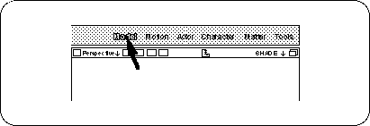

Return to previous page | Return to menu | Go to next page
Practice the modeling method of the polygon model of the soft image by following the actual production process. The theme is "TV monitor".
Notes on description
In the text, [] indicates a menu command, and [] indicates a hierarchical (sub) menu.
Set the mode to “Model” (Figure 2-1).

First, we will prepare a cube that will form the basis of the shape of the TV monitor.